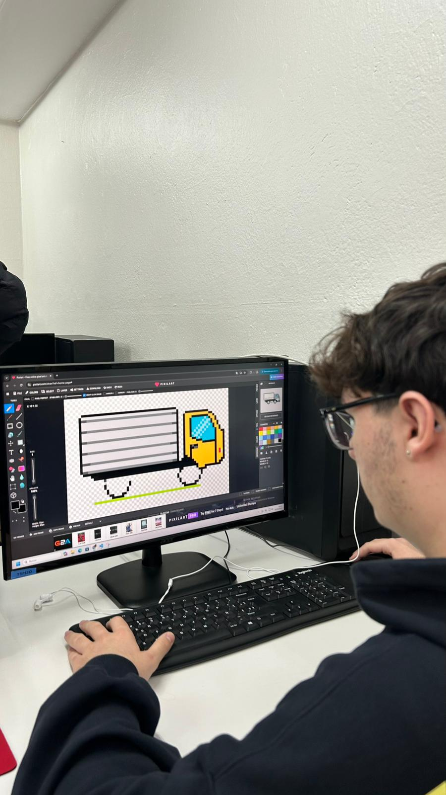
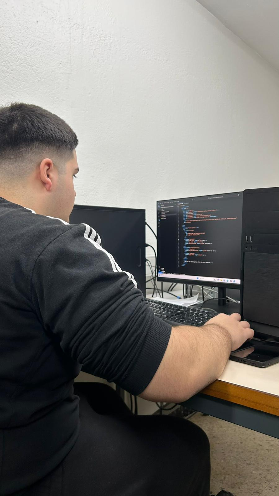
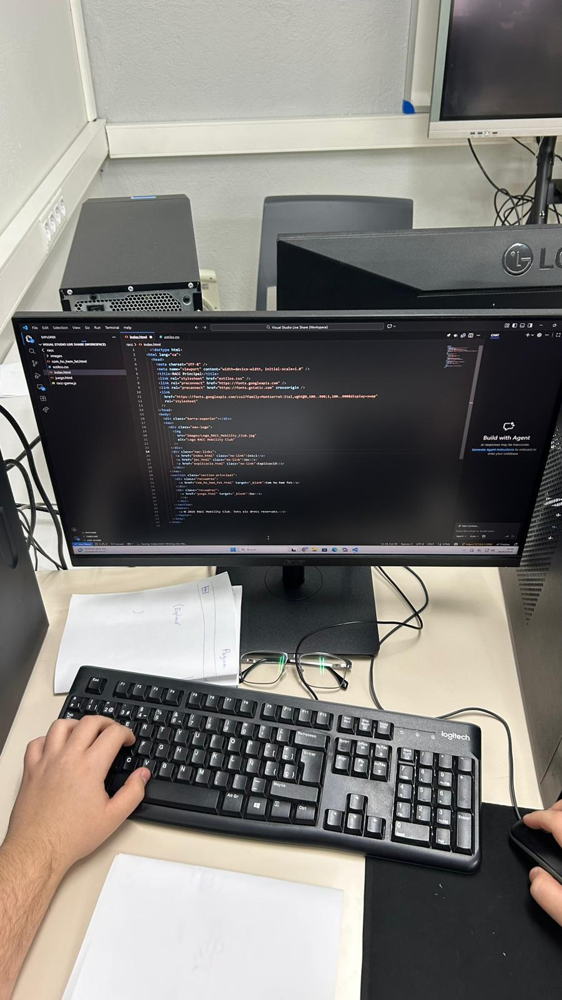

Al principi del projecte ens vam centrar en la planificació tècnica i en la definició de l’estructura base de la pàgina principal. Abans d’afegir funcionalitats, vam dissenyar l’arquitectura del lloc web, decidint quins apartats serien necessaris, com s’organitzaria la navegació i quina jerarquia tindria el contingut.
Vam crear primer l’esquelet amb HTML5, definint correctament les etiquetes semàntiques com <nav>, <section> i <footer> per garantir una estructura clara i ben organitzada.
Un cop establerta la base estructural, vam començar a treballar el disseny visual amb CSS. Vam definir una paleta de colors coherent amb la identitat del projecte, vam configurar la tipografia i vam estructurar els elements principals utilitzant Flexbox per distribuir correctament els blocs de navegació i contingut.
També vam tenir en compte aspectes com el marge, el padding i la proporció dels espais per assegurar una composició equilibrada.
En aquesta fase inicial ens vam centrar exclusivament en la construcció i el disseny de la pàgina principal, deixant per més endavant la implementació de la lògica del joc i la interactivitat amb JavaScript, que s’explicaran en els següents apartats.


